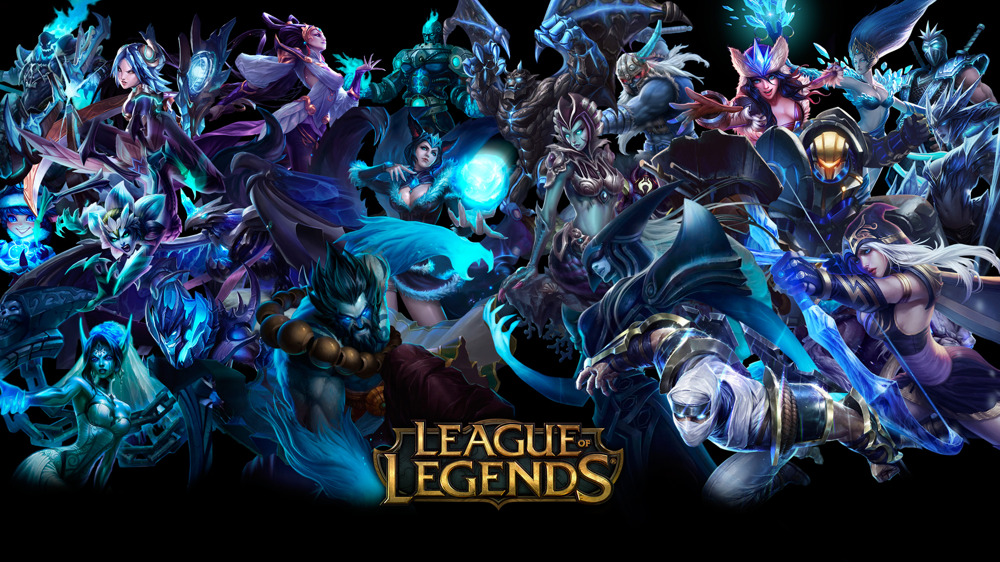

League of Legends
Egy MOBA (felülnézetes) játék, a Riot Games fejlesztése alatt készült el a játék 2009. október 27.-én.
- A játékot kompetitív szinten játszák, 5v5 módban versenyeken, az egyik csapat kék a másik piros színű.
- A játék célja, hogy bedöntsd az ellenfél Nexus tornyát, és ezzel megnyerd a meccset.
- A játékban több száz karakter érhető el, mindegyiket máshogy kell használni.
- Alapvetően ennek a játéknak is megvannak a saját szabályai, és egyéni taktijái.

Counter Strike: Global Offensive
Egy akció lövöldözős (FPS) játék, amit a Valve fejleszt. Ez a sorozat 1997-ben kezdődött, azóta már ez a sokadik verziója a játéknak.
- A játékot kompetitív szinten játszák, 5v5 módban versenyeken, sokszor előfordul az 1v1 is. Van védő és támadó oldal.
- A játék addig megy, míg az egyik csapat nyert köreinek száma el nem éri a 16-ot.
- Különböző taktikák és pályák vannak a játékban, mindenkinek megvan a saját játékstílusa.
- Rengeteg fegyver megtalálható a játékban (AK-47, M4A4, stb.) amik különböző erősséggel rendelkeznek.